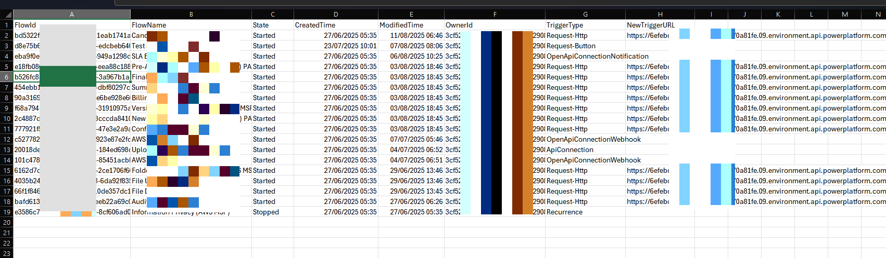

Export HTTP Trigger Callback URLs for Power Automate Flows
Summary
This script fetches HTTP trigger callback URLs for Power Automate flows in a specified environment and exports the results to a CSV file. It checks prerequisites, logs into Microsoft 365 CLI and Azure, retrieves flows, and collects callback URLs for each flow.

# Check if Modules are installed.
# Ensure Az.Accounts module is available
if (-not (Get-Command m365 -ErrorAction SilentlyContinue)) {
Write-Host "Microsoft 365 CLI not found." -ForegroundColor Yellow
Write-Host "Please install manually using npm:" -ForegroundColor Cyan
Write-Host "npm install -g @pnp/cli-microsoft365" -ForegroundColor Cyan
Write-Host "(Requires Node.js: https://nodejs.org)" -ForegroundColor Cyan
# Continue anyway, but 'm365' commands will fail if not installed
}else {
Write-Host "Microsoft 365 CLI is available." -ForegroundColor Green
}
# Ensure Az.Accounts module is available
if (-not (Get-Module -ListAvailable Az.Accounts)) {
Write-Host "Az.Accounts module not found. Installing..." -ForegroundColor Yellow
try {
Install-Module Az.Accounts -Scope CurrentUser -Force -AllowClobber
Write-Host "Az.Accounts module installed successfully." -ForegroundColor Green
}
catch {
Write-Host "Failed to install Az.Accounts. Please install manually with:" -ForegroundColor Red
Write-Host "Install-Module Az.Accounts -Scope CurrentUser -Force" -ForegroundColor Cyan
}
}else {
Write-Host "Az.Accounts module already available." -ForegroundColor Green
}
# Import Az.Accounts
Import-Module Az.Accounts -ErrorAction SilentlyContinue
# ===============================
# Global Variables
# ===============================
# Environment ID
$environmentId = "6e123fe123c14-a15f-eeda-1122-d1232f712323fe09"
# API URL for Flow
$flowUrl = "https://api.flow.microsoft.com"
# Output path
$outputCsv = "C:\testpath\ProdFlows_Output.csv"
# Number of flows to process
$maxFlowsToProcess = 50
# ===============================
# Main Script
# ===============================
# Step 1: Log in to Microsoft 365 CLI (interactive)
Write-Host "Ensure you're logged into Microsoft 365 CLI (run 'm365 login' before running this script)" -ForegroundColor Cyan
# Step 2: Get all flows in environment
$allFlows = m365 flow list --environmentName $environmentId --asAdmin --output json | ConvertFrom-Json
# Step 3: Take first N flows (or less if total < N)
$flows = $allFlows | Select-Object -First $maxFlowsToProcess
Write-Host "Processing $($flows.Count) flows (max requested: $maxFlowsToProcess)" -ForegroundColor Yellow
# Step 4: Login to Azure to fetch access token
Login-AzAccount -UseDeviceAuthentication
$accessToken = (Get-AzAccessToken -ResourceUrl "https://service.flow.microsoft.com/").Token
# Step 5: Prepare results array
$results = @()
# Step 6: Loop through each flow and fetch callback URL
foreach ($flow in $flows) {
$flowId = $flow.name
$flowName = $flow.properties.displayName
$flowState = $flow.properties.state
$createdTime = $flow.properties.createdTime
$modifiedTime = $flow.properties.lastModifiedTime
$ownerId = $flow.properties.creator.userId
# --- Fetch full flow details ---
$flowDetails = m365 flow get --name $flowId --environmentName $environmentId --asAdmin --output json | ConvertFrom-Json
$triggerKind = $flowDetails.triggers
Write-Host "Fetching trigger URL for Flow: $flowName ($flowId)" -ForegroundColor Cyan
$newTriggerUrl = ""
$path = "providers/Microsoft.ProcessSimple/environments/$environmentId/flows/$flowId/triggers/manual/listCallbackUrl?api-version=2016-11-01"
try {
$response = Invoke-RestMethod -Uri "$flowUrl/$path" `
-Method POST `
-Headers @{
"Authorization" = "Bearer $accessToken"
"Content-Type" = "application/json"
}
# Parse response schema
if ($response.response.value) {
$newTriggerUrl = $response.response.value
}
elseif ($response.'$content') {
$newTriggerUrl = $response.'$content'
}
}
catch {
Write-Host "Failed to fetch trigger URL for Flow: $flowId" -ForegroundColor Red
}
# Add new property to results
$results += [PSCustomObject]@{
FlowId = $flowId
FlowName = $flowName
State = $flowState
CreatedTime = $createdTime
ModifiedTime = $modifiedTime
OwnerId = $ownerId
TriggerType = $triggerKind
NewTriggerURL = $newTriggerUrl
}
}
# Step 7: Export results
$results | Export-Csv -Path $outputCsv -NoTypeInformation -Force
Write-Host "Report generated at: $outputCsv" -ForegroundColor Green
# ...existing code...
Check out the CLI for Microsoft 365 to learn more at: https://aka.ms/cli-m365
Important changes coming to the way you login into CLI for Microsoft 365 (effective 9th September 2024) see Changes in PnP Management Shell registration in Microsoft 365
Contributors
| Author(s) |
|---|
| Siddharth Vaghasia |
Disclaimer
THESE SAMPLES ARE PROVIDED AS IS WITHOUT WARRANTY OF ANY KIND, EITHER EXPRESS OR IMPLIED, INCLUDING ANY IMPLIED WARRANTIES OF FITNESS FOR A PARTICULAR PURPOSE, MERCHANTABILITY, OR NON-INFRINGEMENT.